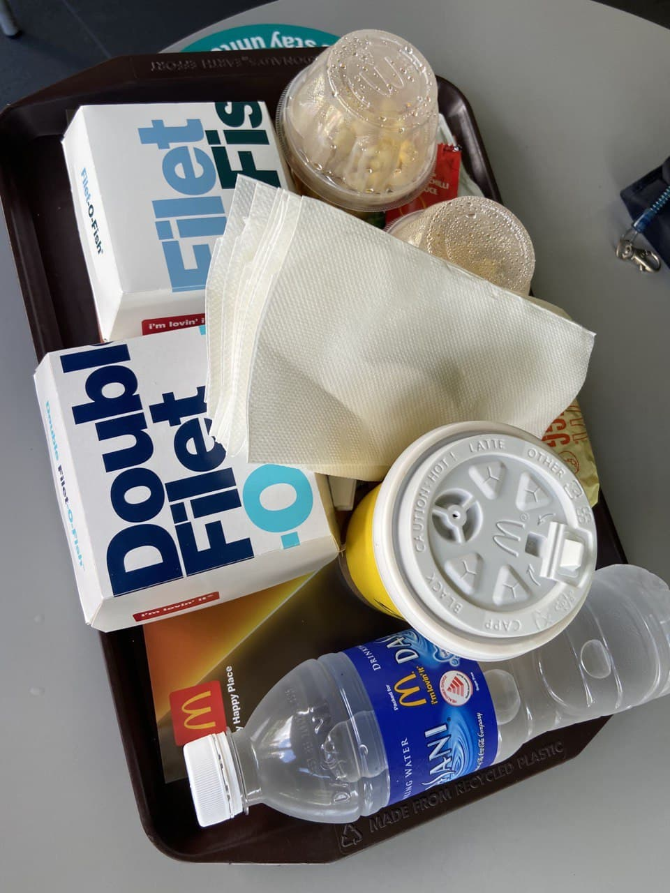
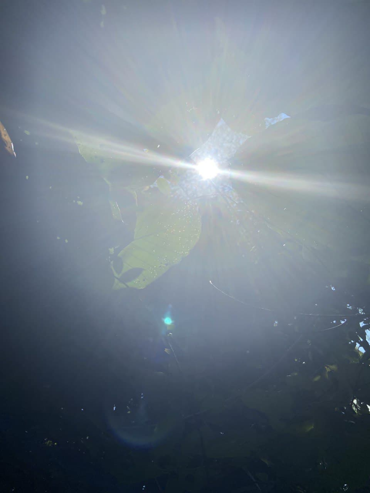
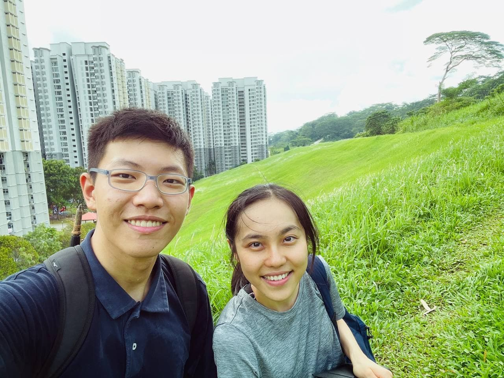
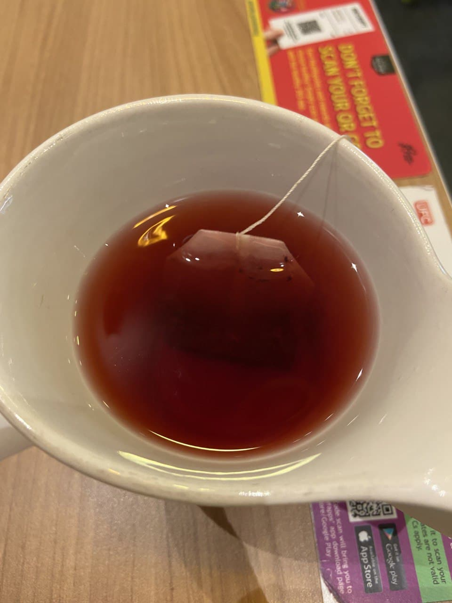
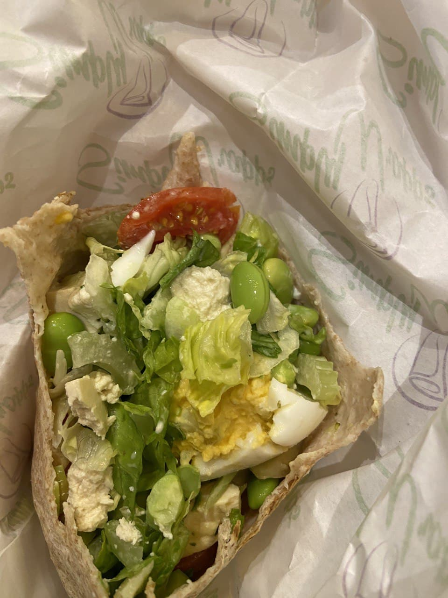

I wanted to just eat lunch at home to save myself from Ana's unrelenting preachings. But he seemed really intent on eating lunch together?? So I suggested Mcdonald's again. Mcdonald specifies the calories in everything. Rather Mcdonald than the unknownable nutritional contents of other foods
Couldn't really get full on the egg McMuffin meal. Started starving after just a few hours. Maybe it's time to switch to a more fulling meal?
We went for a hike after lunch. The secret trail was beautifully hidden. Ropes were tied onto trees, and the only way to get up was to climb on our hands and knees. The climb was pretty tough. Can't help but marvel at those unrestrained and unbidden trees, lying this way and that all over the ground. Took a picture of the sunlight that was filtering through the trees. If it were not for the mosquitoes, I would have loved to make this place my little reading garden
 Dinner at Simply Wrapps. That indian guy was back! Love the way he always toast the wrap until slightly browned. Tasted like pure bliss
 